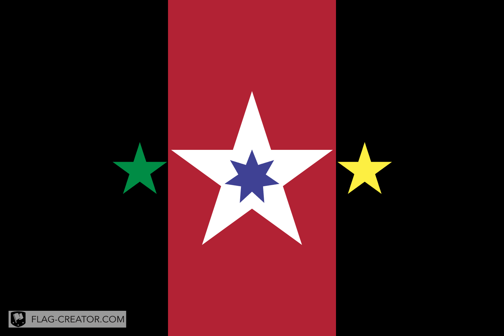

Nationstate #1, Undercave. "The beast that collapsed from the inside"
Undercave was the first nation I made but collapsed due to revolts (neoshitty started it grr)
Here are some facts:
* Capital: Central Administrative Region of Aeksen
* Currency: Toble
* Flag Meaning: Orange blue and green faction with the Aeksen Mount and a sun in the center
* Founded: Aug 23 2023
* Motto: "Kona naya naki koya" -- The rock is our Animal
* Collapse date: Mar 28 2024 with the flag below
